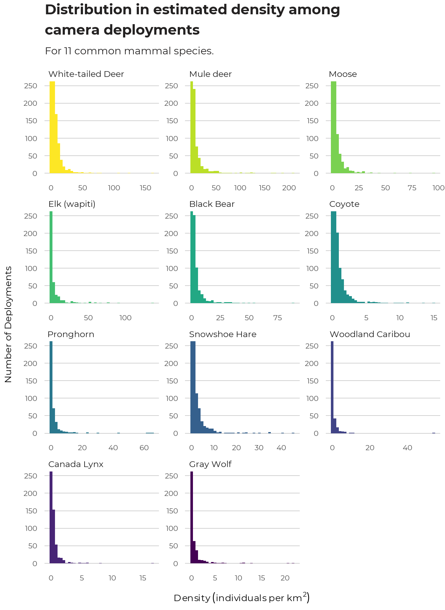
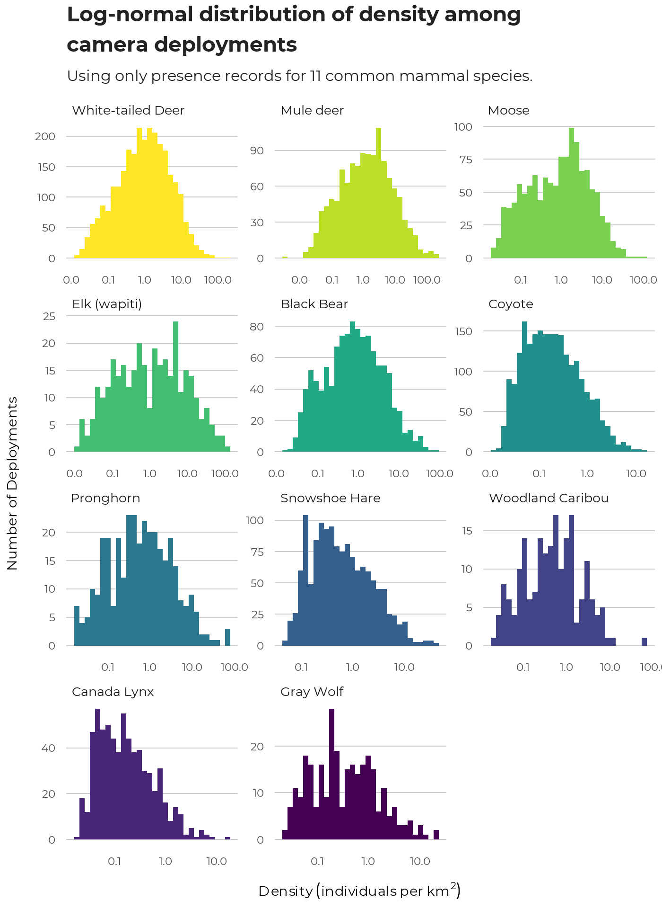

The distributions of density estimates of species at deployments are extremely skewed, with a large majority of deployments having none of a species, some deployments having low densities (one or a few individuals passing by) while a few have very high values (one or more individuals spending long periods in front of a particular camera). Such distributions require large sample sizes to obtain precise estimates – for example, for yearly changes in density in a region or to use for estimating abundances in different habitat types. Ecologists’ intuitive experience with adequate sample sizes may be very misleading with these kinds of distributions. Pilot studies and formal analysis of expected precision are recommended for large projects.

For habitat modeling, we find that the density estimates are best treated as a compound distribution of presence/absence – modeling how the 0 records differ from the non-0 records – and of abundance where the species is present – explaining variation in abundance where the species was recorded. We model presence/absence with the typical logit-linked binomial model, and the abundance-given-presence distribution with a log-normal distribution, which fits most of the species’ distributions reasonably well. This compound distribution is the same as a zero-inflated log-normal distribution, but explicitly treating the two components separately allows more flexible modeling and critical examination of each component.
